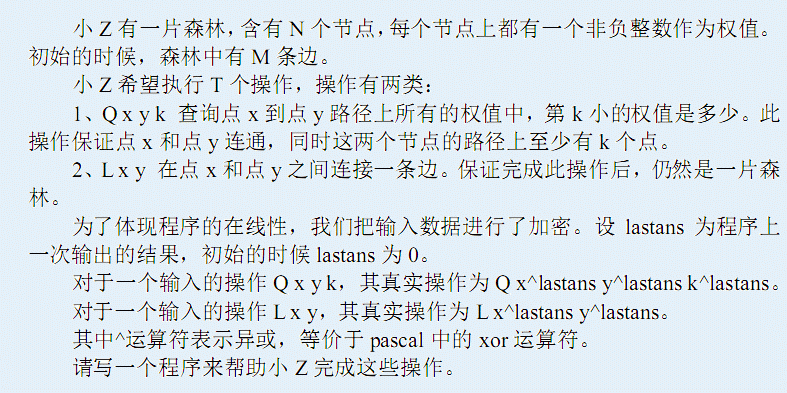
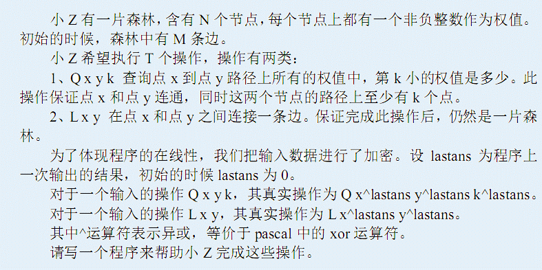
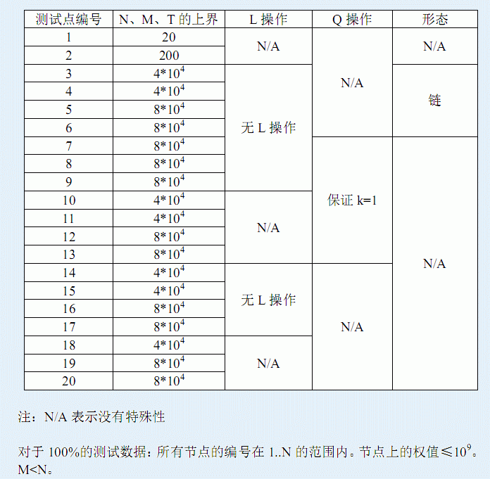

| F.A.Qs | Home | Discuss | ProblemSet | Status | Ranklist | Contest | 入门OJ | ModifyUser Xeonacid | Logout | 捐赠本站 |
|---|
| F.A.Qs | Home | Discuss | ProblemSet | Status | Ranklist | Contest | 入门OJ | ModifyUser Xeonacid | Logout | 捐赠本站 |
|---|

第一行包含一个正整数testcase，表示当前测试数据的测试点编号。保证1≤testcase≤20。
第二行包含三个整数N，M，T，分别表示节点数、初始边数、操作数。第三行包含N个非负整数表示 N个节点上的权值。
接下来 M行，每行包含两个整数x和 y，表示初始的时候，点x和点y 之间有一条无向边, 接下来 T行，每行描述一个操作，格式为“Q x y k”或者“L x y ”，其含义见题目描述部分。
对于每一个第一类操作，输出一个非负整数表示答案。
对于第一个操作 Q 8 7 3，此时 lastans=0，所以真实操作为Q 8^0 7^0 3^0，也即Q 8 7 3。点8到点7的路径上一共有5个点，其权值为4 1 1 2 4。这些权值中，第三小的为 2，输出 2，lastans变为2。对于第二个操作 Q 3 5 1 ，此时lastans=2，所以真实操作为Q 3^2 5^2 1^2 ，也即Q 1 7 3。点1到点7的路径上一共有4个点，其权值为 1 1 2 4 。这些权值中，第三小的为2，输出2，lastans变为 2。之后的操作类似。
